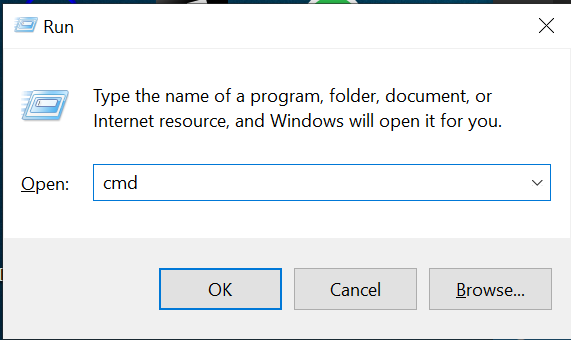
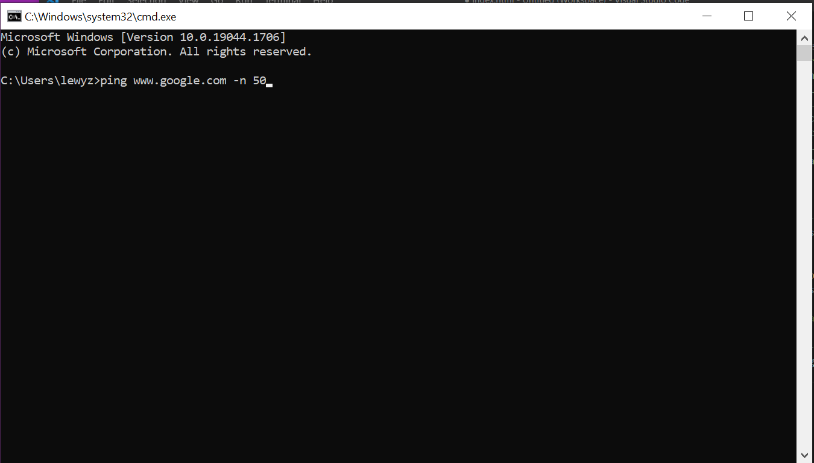
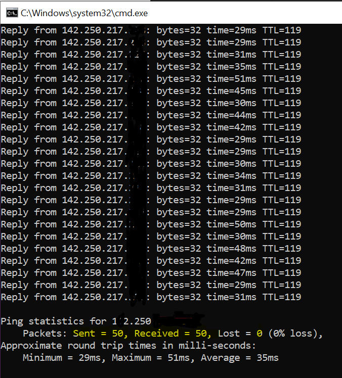

presionamos windos+R
escribimos: cmd
escribimos: ping www.google.com -n 50
verificamos que tengamos internet y presionamos enter
el resultado para ver que este bien el servicio es este, no tenemos que tener perdida de paquetes (esto se hace con solo tener la computadora conectada al router)
